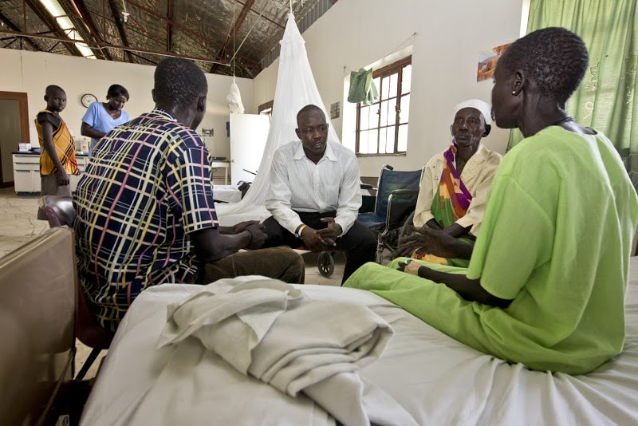

About The Clinic
After establishing itself, the SSHCO board members began raising funds and
awareness of building a health clinic in Maar. After reaching out to generous donors
and communities with influential friends from North Sudan, Egypt and Kuwait,
SSHCO was able to construct an $800,000 clinic in South Sudan.
Since its creation, the health clinic has provided new levels of health care to
the people of Maar and the surrounding area for the first time. The clinic has
provided hundreds of people with a better life for less than $5 a person.